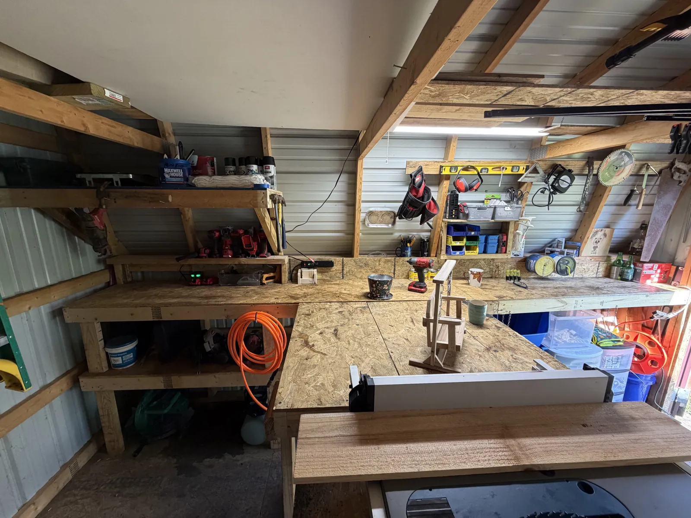

Big shops run a thousand of something and hope it sells. I build what's on the list — which means the piece you get was made for you, not for a shelf.
There's no warehouse here and no stack of unsold stock waiting to be marked down or thrown out. Everything gets built because somebody asked for it. That's not a sustainability slogan — it's just how a one-man shop has to work, and it happens to waste nothing.
Built one at a time, the slow way, because there's only one of me.
It also means what you order is the only one of its kind that week. If you want the arms an inch wider or the back cut different, say so before I start — nothing's already been made.
A good bit of my lumber is reclaimed — pallet wood and old barn boards, when I can get hold of them and they're still sound. I pull the nails, plane it back and see what's underneath. There's usually more character in a hundred-year-old barn board than in anything I could buy new.
I won't tell you it's everything I use, because it isn't. Some pieces have to sit outside through a Kentucky winter, and for those you want new cedar that hasn't already spent forty years in a hay loft. When a piece needs it, that's what goes in it.
The cut-off from one swing arm ends up as the corner brace on the next one. A board too short for what I planned usually turns into a birdhouse roof. Shorts become jig blocks, and the real scraps go in the burn pile for the winter.
I've done it that way since long before anybody had a word for it. Wood costs money and I don't have much of a margin for throwing it away.

There's a coffee can on the shelf full of nails. Some came out of boards I pulled apart, some came through my grandad's toolbox, and I couldn't tell you which are which anymore. A bent one straightens. A short one holds a jig. Every so often one goes into something I'm building.
Versatile creatures.
The four I keep on hand run lightest to darkest: base cedar, stained cedar, dark oak and dark walnut. If none of them suit what it's going next to, pick a stain or a paint colour and I'll match it — costs the same.
Anything living outdoors gets sealed for weather. Tell me where a piece is going — full sun, a covered porch, under a tree — and I'll finish it for that.
Tell me what you're after and what you want it made of.